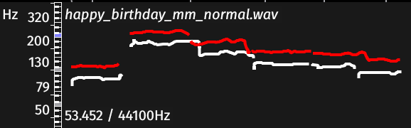
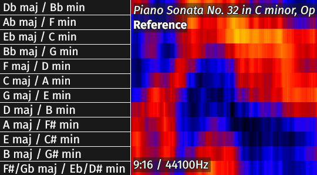

Sonic Lineup
Sonic Lineup is an application for comparative visualisation and alignment of related audio recordings. This is a brief reference manual explaining the concepts used in Sonic Lineup and how to use it. This manual describes Sonic Lineup version 1.1.
This document is Copyright 2020 Queen Mary, University of London. You may modify and redistribute it under the terms of the Creative Commons Attribution-ShareAlike 2.5 License. See http://creativecommons.org/licenses/by-sa/2.5/ for details.
1 What Sonic Lineup is For
Sonic Lineup is intended for visualisation and inspection of multiple audio files which are related by way of representing the same "source material".
This could mean they are recordings of different performances of the same work; different recordings of the same performance; different "takes" of parts in a studio session; or perhaps recordings of variant works or cover songs, so long as they are broadly structurally similar.
With multiple such audio files loaded, Sonic Lineup will attempt to align them in time, based on an analysis of their audio content, so that you can navigate them in sync with one another in terms of the common musical content they represent. A number of different visualisation modes are provided, and switching modes takes effect for all loaded files at once.
Sonic Lineup also supports recording directly from the microphone or other audio input.
Sonic Lineup is not designed for editing, annotation, precision measurement, or any custom analysis of audio. No editing facilities are included, no adjustable parameters for the visualisation modes are provided, and it is not possible to save or export any kind of annotation or session information. In contrast to Sonic Visualiser, Sonic Lineup is intended for "quick" comparative analysis, rather than for intensive study.
2 Window Layout

Sonic Lineup with four audio files loaded
Most of the Sonic Lineup window is taken up with views of each of the audio files that you have opened, each in a different colour.
In the very centre of each view is the aligned playback position line, a solid white line. The translucent white lines snaking down across the views are the salient feature layer mappings.
The first of the audio file views is labelled as the "Reference", and has special significance as the alignment reference, source of the salient feature layer, and source of the reference sample rate.
Below the audio views, at the bottom of the window, are the view mode selection buttons, which switch between the available views for all files at once.
At bottom right are the audio playback speed and volume/pan controls.
3 Opening Files
Use the Add Files toolbar button or menu option to open one or more audio files. If you have several files in the same folder that you want to open, you can select them all at once in the file dialog.
To clear the session and start again with new files, use the
 Clear
Session toolbar button or menu option. You can also close any
of the individual files except for the Reference, and remove
it from the view, by clicking the
Clear
Session toolbar button or menu option. You can also close any
of the individual files except for the Reference, and remove
it from the view, by clicking the  close button at the top left of
its view. You can't close the Reference file except by
clearing the session.
close button at the top left of
its view. You can't close the Reference file except by
clearing the session.
The set of files you have opened is remembered from one run of Sonic Lineup to the next: when you start the application, it starts up with the same files open as last time. You can also use the File → Recent Sessions menu to choose from the most recently-used sets of files.
4 Alignment
When you open more than one audio file, Sonic Lineup will try to calculate an alignment in time between the Reference file (the first one opened) and each of the other files, on the assumption that they all represent different versions of the same underlying musical material.
If this alignment is calculated correctly, then it becomes possible to scroll through each file while tracking the same position in "musical terms" in all of the other files, and to play through the music switching at any moment between versions at the same "musical" position.
(Even if the files are totally unrelated, Sonic Lineup will always come up with some alignment. It always does its best. The alignment just won't make any sense unless the recordings have something in common.)
The alignment may take some time to calculate. A progress bar at the left side of each audio file view shows how far through each file the calculation is, and the text "Aligned" is shown at the left of the file's view when it is complete. (Similar progress bars are used when calculating data for some of the different view modes, when you switch mode.)
The default alignment process uses the MATCH algorithm. This typically works well for variant recordings of similar recording quality without significant structural differences.
Real recordings often differ in pitch as well as time – because of small differences in tuned pitch, or even because they are performed in different keys – and so by default, before the time alignment is calculated, Sonic Lineup will check whether the files to be aligned have similar pitch profiles; if not, it may retune them when calculating the time alignment. Files whose alignments were calculated with a tuning difference will have "Aligned at N cents" shown on their views, where N is the number of cents the tuning of the aligned file appeared to differ by, relative to the Reference file.
4.1 Controlling Alignment
The Alignment menu offers a choice of alignment methods. Note that in all cases the files are aligned individually against the reference file: each file's alignment is independent of the content of any other files except for the reference.
- No Alignment – If this is selected, no time alignment will be calculated. The files will still scroll together, but on a pure "clock time" timeline.
- Linear – The files will be aligned according to a simple linear calculation based on their relative durations without regard for their content. For example, if one file has twice the duration of the other, it will be assumed that it contains the same material but at half the tempo, and the files will scroll together on that basis.
- Linear Trimmed – As Linear, except that any silent sections at the beginning or end of each file will be ignored when calculating their relative durations.
- MATCH Aligner – Use the MATCH algorithm, as implemented in the MATCH Vamp Plugin. This applies a constrained form of dynamic time-warping to calculate a best cost path through a similarity matrix of spectral audio features. It typically works best for recordings that vary in timing but not significantly in structure or arrangement.
- MATCH with Tuning Compensation – This is the default setting. This uses the MATCH algorithm, but it first compares the pair of files being aligned to establish whether they appear to have an overall difference in tuning or pitch; if so, it instructs the MATCH algorithm to take this into account. This allows the method to align recordings successfully even if they are in different keys or registers or tuned to different reference frequencies. However, sometimes the tuning step gets it wrong, and in that case it may be possible to get a better alignment using the regular MATCH aligner.
- Sung Note Contour – Intended for recordings of unaccompanied solo vocals whose differences in timbre or register are significant enough to confuse the MATCH aligner, this works by calculating a note-segmented pitch track of each file and aligning purely according to the locations and extents of intervals between notes. This method is quite specific and is unlikely to be useful for any accompanied or polyphonic material.
- External Alignment Program – This feature allows the advanced user or researcher to customise alignment by providing their own command-line program which will be used instead of any of the built-in methods. The program should accept the paths of two audio files as its only command-line arguments. It should print to its standard output channel a series of lines of comma-separated values, with one line per alignment point, and each line containing two values representing time in seconds in the first and second audio files respectively. The interpretation is that each row in the first column of the output contains a time in the reference file which is mapped to the time in the other audio file given in the corresponding row in the second column of the output. Nothing else should be printed to standard output, but the program may print anything it likes to standard error and it will be logged but otherwise ignored.
In addition to the choice of alignment method, there is a further option that affects how alignment is carried out:
- Align to Section of Reference – This option
can be enabled whenever the alignment method is set to one of
the MATCH options or to Sung Note Contour. It tells Sonic
Lineup that the other files are not expected to contain
versions of the whole of the reference, but only parts of
it. If you switch this on, then Sonic Lineup will perform an
initial pass in which it tries to identify the section of the
reference which each of the other files should be aligned to,
and will then align it only against that section.
Note also that "MATCH with Tuning Compensation" alignment method is unlikely to produce good results in the case where files represent only part of the reference, so you may also need to use a different method such as plain MATCH.
5 Playback and Recording
5.1 Playback
Playback is controlled using the transport controls in the toolbar.
Use the  Play / Pause button, or
press the Space key, to start and stop playback.
Play / Pause button, or
press the Space key, to start and stop playback.
Use  Rewind to Start and Fast Forward to End to jump to
either end of the current audio file.
Rewind to Start and Fast Forward to End to jump to
either end of the current audio file.
Use  Rewind
and Fast Forward
to jump to the nearest item in the appropriate direction in
the salient feature layer if it
is present, or by a short fixed distance otherwise.
Rewind
and Fast Forward
to jump to the nearest item in the appropriate direction in
the salient feature layer if it
is present, or by a short fixed distance otherwise.
You can also skip about during playback by dragging a pane.
The current playback position is always that of the pointer in the centre of the audio file view, and the current audio file (the one that is playing) is marked with a vertical white bar at the left end of its view. Click on a different file to switch to that one during playback. If they are properly aligned, then this should take you to the same moment in the underlying musical timeline.
At the bottom-right of the main window, you can see two controls for playback speed and volume level/pan. The dial control can be used to speed up or slow down playback: you can adjust playback speed from one-tenth to ten times the original speed without affecting its pitch, although the sound quality will suffer. The level/pan button shows both volume level and overall stereo balance and can be used to adjust both: click on the level/pan button to open a bigger control and then drag it up or down for level and left for pan.
5.2 Recording
Use the Record button to start recording a new audio file from the microphone or other connected input. Press Record again, or the Space key, to stop recording. The recording will be added as a new audio file and aligned in the normal way.
Recorded audio files are saved in a folder beneath your home directory, and remain there after Sonic Lineup exits: clearing the session does not delete them. Go to File → Browse Recorded Audio to open the recorded audio folder in your system's file explorer window.
5.2.1 Permission to use the microphone (macOS only)
On macOS 10.14 Mojave or newer, the first time you ask to record from the built-in microphone, a system dialog box will appear asking for permission to use the microphone. You must agree to this, or else the recording will be silent. The operating system remembers your reply, and will not ask you again, even on subsequent runs of Sonic Lineup. If you need to change this later, refer to the Privacy controls in your System Preferences.
6 Navigation
To navigate in time, click on a file view and drag it left or right, or use the left and right cursor keys. This will move the timelines of all the file views in that direction, maintaining their alignment against the central position pointer.
To zoom in and out, use the mouse wheel, a two-finger vertical scroll-drag on the trackpad, or the up and down cursor keys. You can also press the F key (or equivalently use View → Zoom to Fit) to zoom out all the way so that the whole extent of the audio fits in the window.
7 The Salient Feature Layer
When the first audio file is loaded for use as the Reference file, a set of "salient features" is calculated from it, labelling points of interest in the recording.
Salient Feature Layer on an Outline Waveform.
The solid line in the middle is the playback position indicator
These features are chord changes calculated using Chordino. Chordino is a chord estimator for pop and rock music, so the resulting features are unlikely to be directly meaningful in other kinds of recording, but the feature times will often correspond to harmonic changes of some sort and may have value as indicators of salient moments in the music.
The salient features are marked with translucent vertical lines placed over the Reference file view, and next to each line the label of the chord estimate is shown. The timings of these features are then mapped on to the other files according to the alignment between them, so that you can see at a glance where these moments in the Reference have been aligned to in the other files.
Note that the vertical lines displayed on non-Reference views show where the salient features found in the Reference have been mapped to by the alignment process – they do not show features extracted from the non-Reference audio. Salient features are only calculated from the Reference file.
8 View Modes
8.1 Outline Waveform
The Outline Waveform view is an audio waveform-style display designed to give an impression of the overall audio envelope even when very little space is available.
An Outline Waveform view
Only a single wave shape is shown for each audio file, no matter how many channels it has. Two-channel audio is shown in a merged "butterfly" format, with the first channel level determining the distance the shape rises above the X axis and the second channel the distance it descends below it. If there are more than two channels in the file, only the first two are used.
The vertical scale for sample values uses a non-linear scale based on IEC-268 meter deflection levels. This is intended to make quiet sections easier to see than in a typical linear-scale waveform, while making peaks still fairly apparent.
8.2 Waveform
The Waveform view is a classic audio waveform with one "track" per channel and a simple linear vertical scale.
A Waveform view
The image above shows the same audio (from a recording of Bach cello suites) as was used in the Outline Waveform image in the previous section.
8.3 Melodic Spectrogram
The Melodic Spectrogram view is a time-frequency plot derived
from a succession of short-time Fourier transforms, truncated to
a limited frequency range (80 to 1500 Hz,
roughly D#2 to F#6 in ASA octave
terms).
It may be useful for observing melodic and harmonic progressions in the music.
A Melodic Spectrogram view
The spectrogram uses an 8192-sample Hann window and FFT size, with 2048-sample advance between frames. If the audio file has multiple channels, they are mixed to provide the source of the spectrogram.
The colour scale uses a mapping that is linear in magnitude within each column, but which scales each column down so that its maximum magnitude is set to the base-10 logarithm of its original value. This flattens out the difference in level between subsequent columns, making it easier to see pitch content but obscuring some of the volume and timing information.
8.4 Spectrogram
The Spectrogram view is a classic full-frequency-range spectrogram, a time-frequency plot derived from a succession of short-time Fourier transforms, covering the frequency range from 0 to half the sample rate of the Reference audio file.
It may be useful for observing production and recording conditions such as frequency bandwidth or noise levels, as well as percussive content and the general spectral envelope.
A Spectrogram view
The spectrogram uses a 1024-sample Hann window and FFT size, with 512-sample advance between frames. If the audio file has multiple channels, they are mixed to provide the source of the spectrogram. The colour scale is based on a logarithmic (dB) mapping.
The image above shows the same audio (from a recording of Bach cello suites) as appears in the Melodic Spectrogram image in the previous section, and indeed in the leading images for all of the other views in this documentation.
8.5 Sung Pitch
The Sung Pitch view shows the result of analysing the audio using the pYIN pitch tracker. pYIN is purely a pitch tracker for monophonic audio – it does not extract a melodic line from mixed or ensemble pieces.
A Sung Pitch view
The name Sung Pitch reflects the fact that this pitch extractor is most reliable for recordings of the solo singing voice, though it will work reasonably well for many other solo instruments, such as the cello recording shown here.
 Each of the views, other than the Reference view, also has the Reference pitch track overlaid upon it – as shown in the image to the left here.
That is, the pitch track extracted from the Reference audio is warped in time according to the alignment that has been calculated between the current audio file and the Reference, and is shown in white next to the current file's own pitch track in its colour. In this example we can see that the Reference audio is about four semitones lower than the current file, although detailed measurement is always better done in a different application such as Sonic Visualiser.
8.6 Key
The Key view shows a merged key-strength plot generated by the QM Key Detector Vamp plugin.
A Key view
This is calculated by taking a series of chromagram slices through the audio and, for each, comparing the degree to which the chromagram profile correlates to a prepared key profile for each major and minor key. The resulting plot shows how closely each key profile matches at each increment in time, with orange/yellow representing a better match than blue/black.
 The vertical scale, shown to the right, follows the circle of fifths with C major / A minor just above the middle, and with each pair of relative major and minor keys merged into a single value. To toggle visibility of this vertical scale, use the S key or View → Show Vertical Scales.
This view has a number of limitations, including:
- In the current version of Sonic Lineup, it assumes a fixed tuning frequency of A=440Hz. This will change in future releases. You can see how this affects the results in the view of the cello recording shown above: the piece is in C minor, but it is shown with a tonal centre at B minor (or D major) because the period instrument in this recording has a lower tuning than A=440.
- The view carries no information about major/minor mode, as the two are merged.
8.7 Stereo Azimuth
The Stereo Azimuth view shows a stereo plan decomposition of the audio. The vertical scale covers the stereo plan from left-channel-only at the bottom to right-channel-only at the top, and the intensity level indicates what proportion of signal energy is found at that point on the plan at each moment. The view assumes that the file has two channels containing left and right channel signals.
A Stereo Azimuth view
The calculation works by taking a spectrogram of each channel and, for each frequency bin, using the relative levels of the two channels at that bin to determine where on the stereo image the bin "lives". The resulting plot is effectively a histogram of these locations, for each time increment in the spectrogram.
This view is a bit experimental and perhaps should not be taken too literally, but it does show some of the results of production or recording decisions. A mono recording will appear as a simple straight line down the middle, while recordings with limited numbers of sources placed by "pan pot" will show separate strands for each.